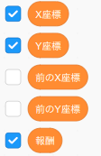

3. Q学習で走行ルートを決める
ではこの「Q学習」を使って走行ルートを決めてみましょう。 そのためにまず「環境」「エージェント」「状況」「行動」「報酬」を明確にしておく必要があります。
まず「環境」「エージェント」に関しては簡単で
「環境」 ＝ マップ (ルート選択画面)
「エージェント」 ＝ 車 (緑の四角)
となります。
次に「状況」に関しては前ページの例では分岐点としましたが、今回はもう少しプログラミングらしく
「状況」 ＝ マップの座標
とします。座標は車がマップのどの位置に示すかを表す数値の組で、横方向の位置を「X座標」、縦方向の位置を「Y座標」といいます。マップの一番左の列のX座標は1で右に行くにつれて数字が増えます。またマップの一番下の行のY座標は1で上に行くに連れて数字が増えます。
次に「行動」に関しては前ページの例と同様に
「行動」 ＝ 方向を選んで移動する
となります。なおプログラミングの都合から移動方向には次の数値を割り当てることにします。
| 移動する方向 | 数値 |
|---|---|
| 上 | 1 |
| 左 | 2 |
| 下 | 3 |
| 右 | 4 |
また、移動した際にもらえる「報酬」のルールは次の様にします。
ルール1： 道から外れたら -100 点
ルール2： ゴールにたどり着いたら +100 点
ルール3： 一度通った場所に戻ったら -100 点
ルール4： 道の上なら -1 点
さてルール1〜3については納得できると思いますがルール4の意味が分からないかもしれませんね。それでは逆に移動後に道の上なら +1 点としたらどうなるか考えてみましょう。この場合はなるべく多く道の上を進んだ方がたくさん報酬がもらえる訳ですからエージェントはわざと遠回りしてゴールを目指すルートを選んでしまいます。よってなるべく最短距離でゴールに到達するようにペナルティを与えています。
それでは実際にシミュレータを動かして座標と報酬を確認してみましょう。まず

の順にブロックを押してルート選択画面を開いて下さい。次に
の様に「X座標」「Y座標」「報酬」ブロックにチェックを入れてそれらの数値を表示して下さい。あとは

ブロックを適当に押して、車(緑の四角)が動くと「X座標」「Y座標」「報酬」の数値がどう変化するのか確認して下さい。